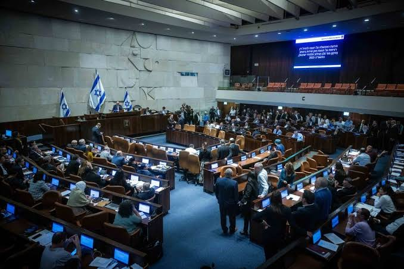
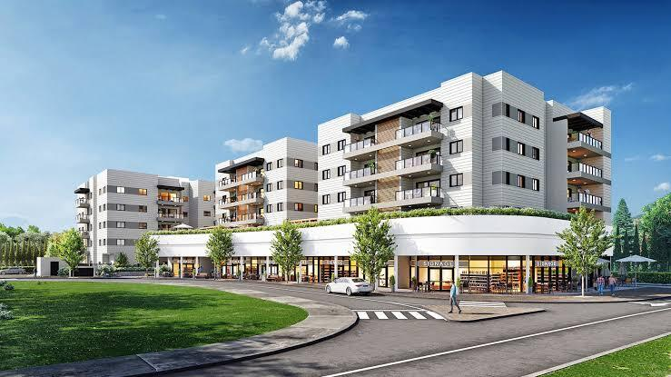
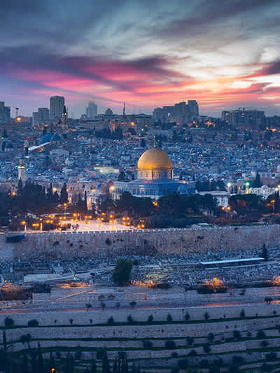
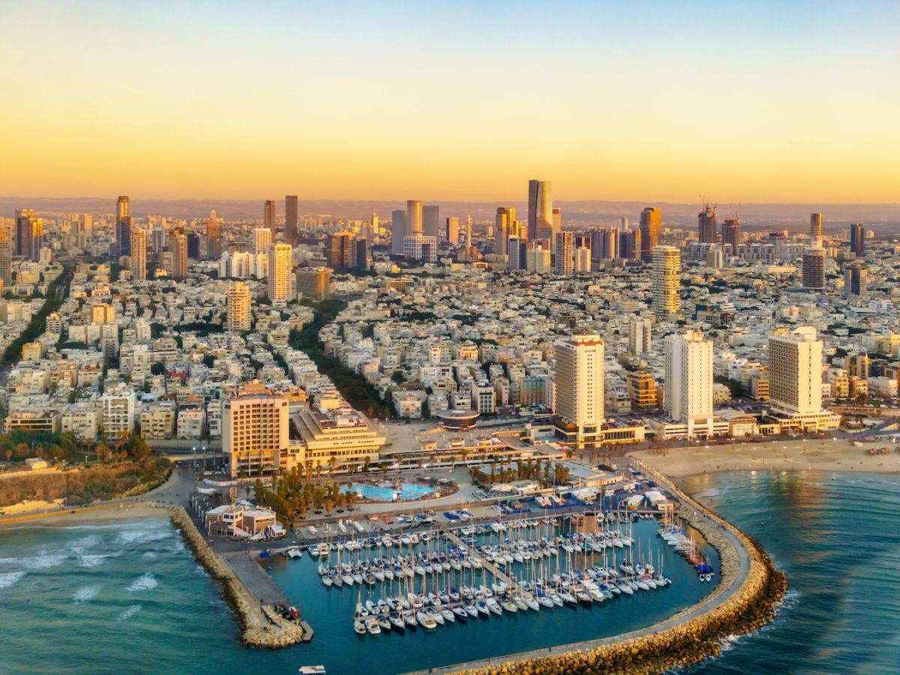
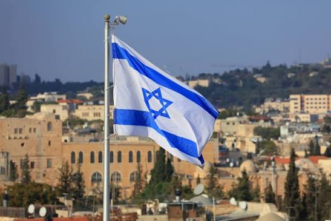
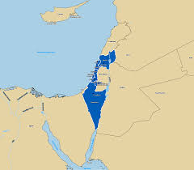

Explore educational information about Israel, including its geography, government, parliament and selected communities. This website has been created for educational purposes only.
Jerusalem
Approximately 10 million
Hebrew
Israeli New Shekel (ILS)
Parliamentary democracy
22,145 km²
The Knesset is the national parliament of Israel. It consists of 120 elected members. The parliament is responsible for passing laws, approving the state budget and supervising the government.

Mazkeret Batya is a local council located in central Israel. Founded in 1883, it is known for its historical heritage, quiet residential environment and preserved architecture.

Images of selected places and landmarks in Israel.




This website was created as part of a school project for educational and informational purposes.
To provide general information about Israel, its parliament, geography and the local council of Mazkeret Batya.